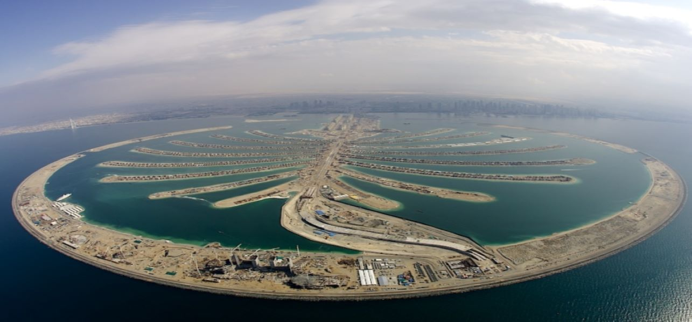
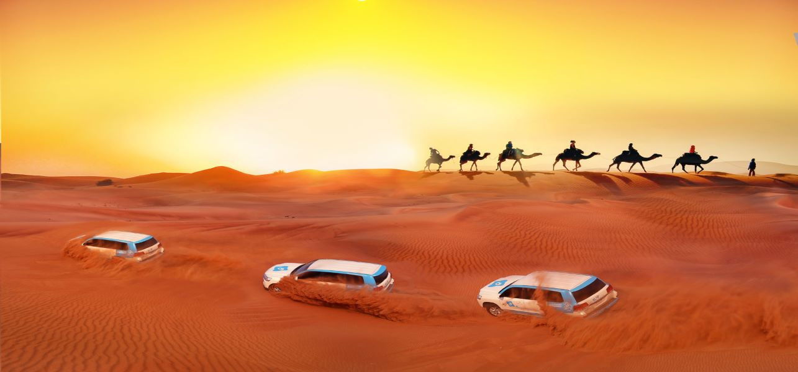

- Home
- Places To see
- Excursion to nearby places
- Amusements parks
- Islands
- Religious places
- Museums
- Hotels
- Restaurants






Bait Al wakeel Fishing and Maritime Museum which is great place learning fishing and marine life fact and entertainment activities in dubai. As it was one the main zone of transporting of goods dubai. Bait Al wakeel, that is first dubai building which are committed to dubai government purpose. This is considered one of the great buildings of modern time and has gain the popularity of tourist’s attractions.
The Salsali Private Museum, in Dubai, United Arab Emirates, is the first private museum in the region for contemporary Middle Eastern and international art. It was founded in November 2011 by Ramin Salsali, and is located in the industrial area of Al Quoz in Alserkal Avenue, a complex with the highest concentration of galleries and creative spaces in the region. Exhibitions at SPM showcase artworks from the Salsali's collection and the museum hosts exhibitions from across the globe. Furthermore, SPM serves as an independent center for art collectors, and provides an insight into a Contemporary Middle Eastern and International Art.

This affluent suburb to the south of Dubai city is the location of an important archaeological site dating to the early Islamic period. Large houses built of beach rock (farush) covered with lime plaster have been excavated at Jumeirah by a team from the Dubai Museum. Based on a study of the pottery found at the site, Jumeirah seems to date to the first two or three centuries of the Islamic era. Thus, it is in part contemporary with the sequence at Kush in northern Ras al-Khaimah, and with Jazirat al-Hulaylah.